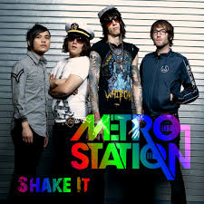

Music in the early 2000s was definitly...interesting. I would describe it as a combination of grunge and pop music and it was really weird, but they're still bops and nostalgic to listen to. Escpecially with our little Ipods. According to Billboard.com these were the top ten artists of the early 2000s that made a lot of songs that we know and love.
For some reason the early 2000s had a lot of really good one hit wonders...I just felt that it was an honerable mention.
<<<<<<< HEADSomebody that I Used to Know - Goyte
Shake It -Metro Station
Bad Day - Daniel Powter
These are only some of the many one hit wonders that are way too many to list. Click here to see the full list.